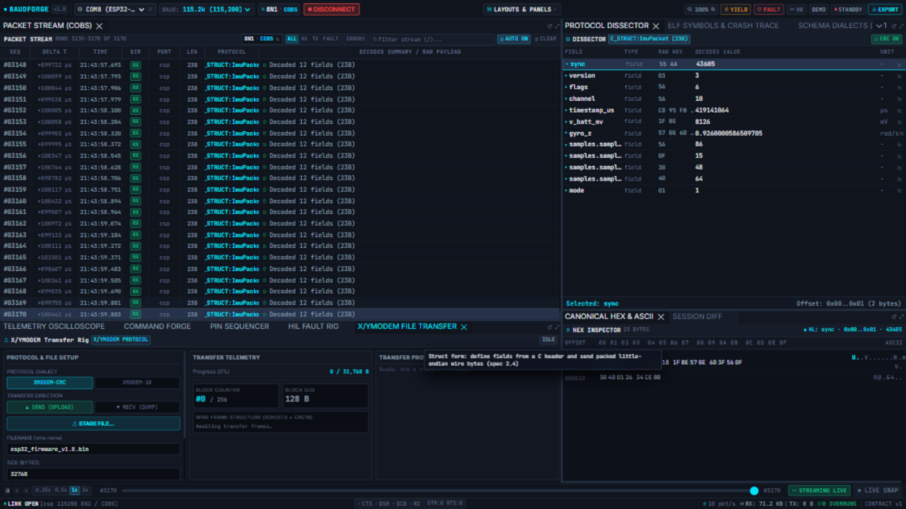

X/YMODEM File Transfer
The File Transfer panel runs a real XMODEM state machine between the engine and your device — firmware uploads, log dumps, any file over the wire — with block-level telemetry and honest failure reporting.

Protocol & file setup
- PROTOCOL DIALECT —
XMODEM-CRC(128-byte blocks) orXMODEM-1K(1024-byte blocks). Both use CRC-16/XMODEM (poly 0x1021), never the checksum fallback. - TRANSFER DIRECTION —
SEND (UPLOAD)pushes a staged file to the device;RECV (DUMP)pulls one from it. - STAGE FILE… — pick the local file to send. The staged name and size show below (e.g.
esp32_firmware_v1.8.bin,32768).
Sending a file
- STAGE FILE… and pick the binary.
- Select
SEND (UPLOAD). - Press START TRANSFER. The engine polls the device for
C(CRC mode), then streamsSOH/STXblocks: header, block number, complement, payload, CRC-16. - Watch TRANSFER TELEMETRY: block counter (
#7 / 256), block size, progress in bytes, and retries — every retransmission is visible, not hidden. - The TRANSFER PROTOCOL LOG narrates the conversation (handshake → transferring → finishing → done).
- Completion is
done— the device ACKed the final EOT.
Receiving a file
- Select
RECV (DUMP), enter the expected file name and size. - Press START TRANSFER. The engine polls
Cand ACKs the device's blocks, trimming XMODEM's^Zpadding at the end. - When the phase reaches
done, the received bytes are offered as a download — byte-for-byte what the device sent.
Phases (and what they mean)
handshake → transferring → finishing → done, or failed:reason. Failures are honest by design: a device that answers CAN shows failed:cancelled by device (CAN); a link that stays silent times out rather than pretending. Retries (up to 10 per block) are counted and shown.
Tips
- Transfers bypass the vault and decoders: protocol traffic is not session data, so your REC vault stays clean.
- The state machine lives in the engine — the CLI can arm the same transfer (
POST /api/transfer), which is how the automated e2e suite drives it. - If the device does not speak XMODEM it answers CAN immediately — you will see a clean failure in seconds, not a hang.